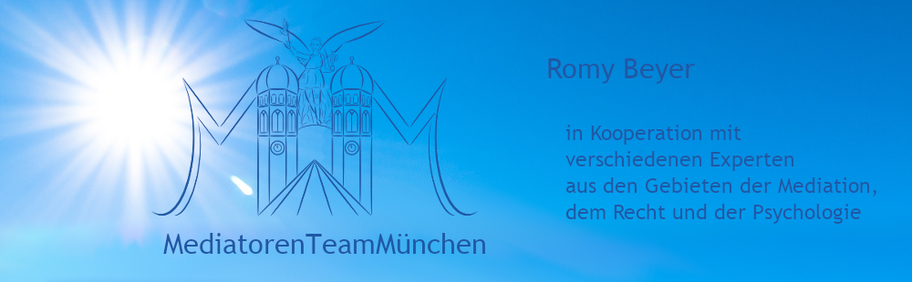
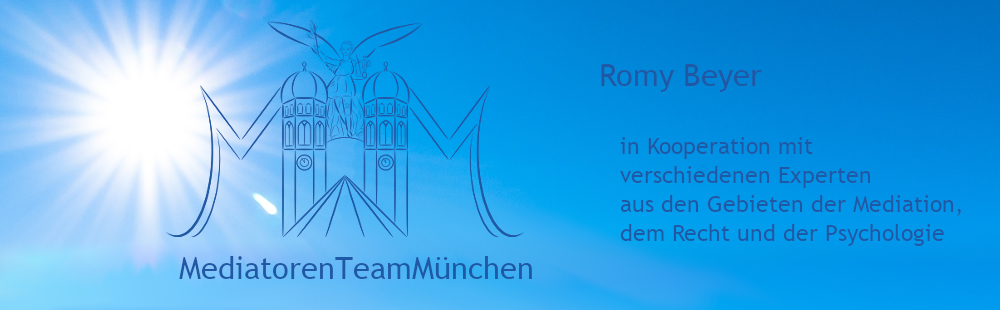

- "Es ist weniger schwierig, Probleme zu lösen, als mit ihnen zu leben"
- Pierre Teilhard de Chardin.
Romy Beyer
Mediatorin IMS
Wirkungsbereiche:
Zur Person:
Schon immer empfand ich es als sehr schade, wenn sich Menschen
stritten und „dicke“ Luft zwischen ihnen herrschte.
Kennen Sie das auch: Sie betreten einen Raum fröhlich beschwingt und halten fast
schon inne als Sie im Raum sind? Grund für Ihr Innehalten ist, dass Sie eine unangenehme Stimmung wahrnehmen. Mir erging es schon oft so.
Und es stellten sich mir die Fragen: Woher kommt dieses Gefühl? Muss das sein
oder kann etwas dagegen getan werden?“ Ja, es kann! Denn nichts, das uns negativ
berührt, sollten wir einfach so akzeptieren, sondern eine passende Lösung dafür
finden.
In dem von mir beschriebenen Fall, also wenn die Luft zwischen Menschen negativ
geladen zu sein scheint, kann mit recht einfachen Mitteln geholfen werden: Mediation. Die Mediation ermöglicht es den wirklichen Auslöser für z. B. lang gehegten
Groll oder die Unstimmigkeit zwischen Parteien herauszuarbeiten und kann an diesem direkt ansetzen.
Lassen sich beide Parteien auf eine Mediation ein, führt dies meist zu einer dauerhaften Befriedung der zwischenmenschlichen Beziehung der Parteien aufgrund der
gemeinsam gefundenen Lösung für ihren Konflikt.
Für mich ist es immer wieder das aller Schönste zu erleben, wie sich die Beziehung
beider Parteien im Laufe einer Mediation zum Positiven verändert. Oft sitzen die
Parteien zu Beginn eines Mediationsverfahrens steif und ablehnend nebeneinander.
Doch bereits nach wenigen Stunden ändert sich dies auffallend. Beide Parteien beginnen miteinander an einer zukunftsfähigen Lösungsfindung zu arbeiten. Ihre Gesichter hellen sich auf, ihre Körperhaltung wirkt entspannter und das anfängliche
Unbehagen weicht dem Gefühl gemeinsam das Thema einvernehmlich und im Sinne
beider Parteien gestalten zu können. Für mich ist diese Entwicklung immer wieder
aufs Neue faszinierend. Gleichzeitig ist dies auch Motivation und Bestätigung für
mich und mein Engagement als Mediatorin.
Die Mediation zeigt mir, dass Diskrepanzen nicht erduldet werden müssen, sondern
gemeinsam eine zukunftsfähige und für beide Seiten tragbare Übereinkunft gefunden werden kann. Sprechen Sie mich an. Gern unterstütze ich auch Sie auf diesem
lohnenswerten Weg.
Werdegang:
Von Haus aus komme ich aus dem Außenhandel, war auf Messen aktiv unterwegs, habe die Leipziger Messe mit eröffnen können, wirkte bei der Entstehung von Leuna2000 mit, sammelte Erfahrungen bei der Herstellung von Kommunalfahrzeugen und habe die Einkaufsabteilung einer Firma von Dänemark nach Deutschland verlagert. Seit circa 11 Jahren bin ich als Strategische Einkäuferin in der Luft- und Raumfahrtindustrie tätig. Ich liebe meine Tätigkeit. Besonders positiv empfinde ich, dass auch sie mir die Möglichkeit bietet, meine Kenntnisse und Erfahrungen aus der Mediation in sie einzubringen. 2018 ließ ich mich als Mediatorin bei der IMS ausbilden und bin als solche seither tätig.